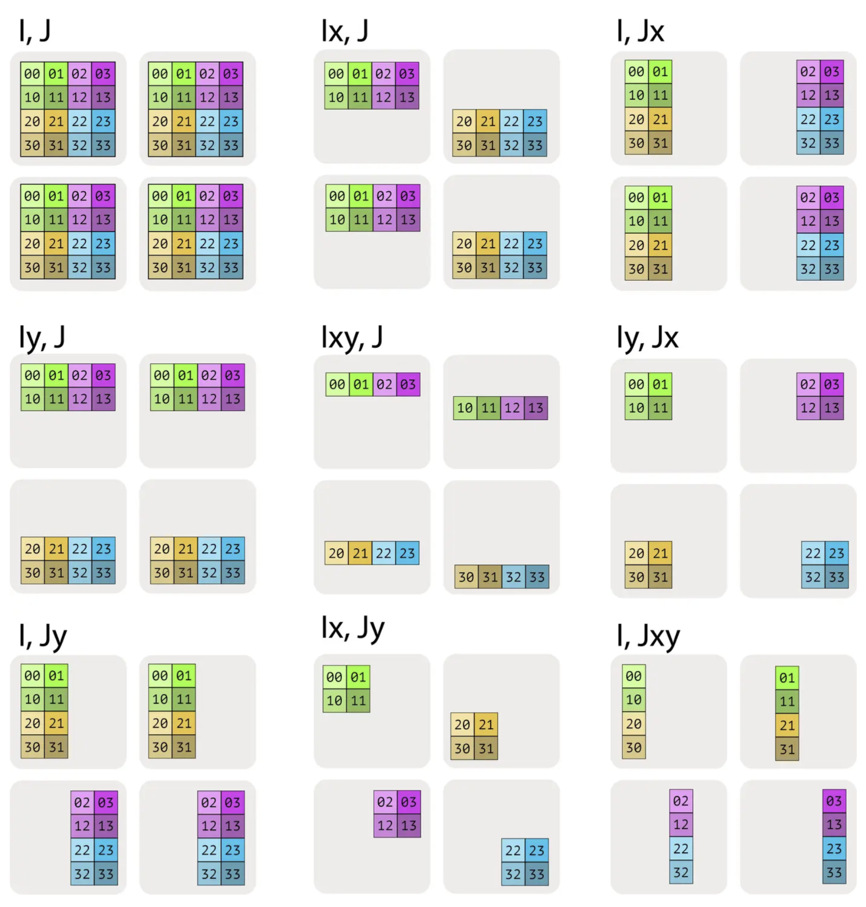

Parallelism Strategies and Communication Collectives #
With an understanding of the underlying AI infrastructure (from on-chip compute and memory hierarchies to scale-up fabrics within a server and scale-out networks across a datacenter), we can now examine how parallelism is used to map LLM computation onto this hardware efficiently. Parallelism determines how model parameters, activations, and requests are partitioned across cores, devices, and servers, and it directly shapes both performance and scalability. In this chapter, we explore the different forms of parallelism used in LLM inference, including data, tensor, pipeline, and expert parallelism, and discuss how each interacts with the hardware stack described in the previous section. By grounding these strategies in the realities of modern AI infrastructure, we can reason about when a particular form of parallelism is beneficial—and when its communication and synchronization costs outweigh its gains.
When serving or training large LLMs, model parameters and intermediate activations often exceed the memory of a single accelerator and must be sharded across devices. Because inference is dominated by matrix multiplications, the central question becomes how do we efficiently multiply matrices that are distributed across devices? Effective scaling depends on choosing sharding strategies that minimize communication overhead while preserving low latency and high throughput. In the first section, we examine how matrix operands can be partitioned across accelerators, what communication primitives are required to combine partial results, and how the choice of sharding strategy affects latency, bandwidth usage, and overall inference efficiency.
Sharding Notation and Device Meshes #
Before diving into the mechanics of sharded matrix multiplication, we need a systematic way to describe how tensors are partitioned across devices. Modern AI accelerators are typically organized into device meshes—2D or 3D grids of interconnected devices that form a torus topology. For example, a Trn or TPU pod might arrange devices in a 2D torus where each device can communicate with its neighbors along two mesh axes.
Device Mesh and Named Axes #
A device mesh is a structured arrangement of devices with named axes. For instance, a 2D mesh with 4 devices arranged in a $2 \times 2$ grid can be described as:
$$\text{Mesh}(\text{devices} = ((0, 1), (2, 3)), \text{axis}_{\text{names}} = (‘X’, ‘Y’))$$
This indicates we have 4 devices in a $2 \times 2$ grid, where the first dimension is labeled $X$ and the second dimension is labeled $Y$. Each device has a position $(x, y)$ in this mesh, where $x \in {0, 1}$ and $y \in {0, 1}$.
Sharding Annotations #
A common approach is to use the named-axis notation (ref: How To Scale Your Model) to specify how tensor dimensions are partitioned across the device mesh. For a matrix $A$ with logical dimensions $I$ and $J$, we can describe its sharding using subscripts that indicate which mesh axes partition which logical dimensions.
Example 1: Fully Replicated
- Notation: $A[I, J]$ (no subscripts)
- Meaning: Every device holds a complete copy of the entire matrix $A$.
- Local shape per device: $(|I|, |J|)$
Example 2: Sharded Along One Dimension
- Notation: $A[I_X, J]$
- Meaning: The $I$ dimension is partitioned across the $X$ mesh axis, while the $J$ dimension is replicated (not partitioned).
- Local shape per device: $(|I|/|X|, |J|)$
- Each device holds $1/|X|$ of the rows, but all columns.
Example 3: Sharded Along Both Dimensions
- Notation: $A[I_X, J_Y]$
- Meaning: The $I$ dimension is partitioned across the $X$ mesh axis, and the $J$ dimension is partitioned across the $Y$ mesh axis.
- Local shape per device: $(|I|/|X|, |J|/|Y|)$
- Each device holds $1/(|X| \cdot |Y|)$ of the total array.
Example 4: Sharded Across Multiple Mesh Axes
- Notation: $A[I_{XY}, J]$
- Meaning: The $I$ dimension is partitioned across both the $X$ and $Y$ mesh axes (treating them as a flattened dimension), while $J$ remains replicated.
- Local shape per device: $(|I|/(|X| \cdot |Y|), |J|)$
- This allows finer-grained partitioning when needed.
Visualizing Sharding Patterns #
Consider a matrix $A$ with shape $(4, 4)$ sharded across 4 devices in a $2 \times 2$ mesh:
- $A[I, J]$: Each device holds the full $(4, 4)$ matrix (fully replicated).
- $A[I_X, J]$: Each device holds $(2, 4)$—half the rows, all columns.
- $A[I, J_Y]$: Each device holds $(4, 2)$—all rows, half the columns.
- $A[I_X, J_Y]$: Each device holds $(2, 2)$—both dimensions partitioned, each device holds $1/4$ of the total.
The different sharding patterns are visualized below:

Sharding patterns for a 4x4 matrix across a 2x2 mesh
Important Constraints #
A key constraint in sharding notation is that multiple logical dimensions cannot be sharded along the same mesh axis. For example, $A[I_X, J_X]$ is invalid—once the $X$ mesh axis is used to partition dimension $I$, it cannot also partition dimension $J$. This constraint ensures that each mesh axis is used for a single partitioning purpose, maintaining a clear mapping between logical tensor dimensions and physical device layout.
Memory and Communication Implications #
The sharding pattern directly determines:
- Memory per device: The local shape tells us how much data each device stores.
- Communication requirements: Different shardings require different communication primitives (AllGather, AllReduce, etc.) to perform operations like matrix multiplication.
- Computation locality: Some sharding patterns allow fully local computation, while others require communication before or after computation.
Understanding this notation is essential for reasoning about the communication costs and memory footprints of different parallelism strategies, which we explore in detail in the following sections.
Sharded Matrix Multiplication #
Consider a standard matrix multiplication $$C = AB,$$ where $$A \in \mathbb{R}^{m \times k}, \quad B \in \mathbb{R}^{k \times n}, \quad C \in \mathbb{R}^{m \times n}.$$ The index $k$ is called the contraction dimension, since matrix multiplication contracts (sums) over this shared dimension: $$C_{ij} = \sum_{p=1}^{k} A_{ip} , B_{pj}.$$ When matrices are too large to fit on a single accelerator, they must be sharded—that is, partitioned across multiple devices along one or more dimensions. How the matrices $A$ and $B$ are sharded determines how the matmul is computed and which communication primitives are involved. The following subsections considers the different sharding strategies. The reader is referred to [1] for a detailed description.
Case 1: Neither Input Is Sharded Along the Contraction Dimension #
Suppose the matrices are sharded only along non-contracting dimensions. For example, shard $A$ along its row dimension (into $P$ shards) and $B$ along its column dimension:
$$A = \left( (A^{(1)})^{\top}, \ldots, (A^{(P)})^{\top} \right)^{\top}, \quad A^{(p)} \in \mathbb{R}^{\frac{m}{P} \times k}$$
$$B = \left( B^{(1)}, \ldots, B^{(P)} \right), \quad B^{(p)} \in \mathbb{R}^{k \times \frac{n}{P}}$$
Crucially, the contraction dimension $k$ is fully replicated on every device. Each device $p$ therefore has all the data it needs to compute its local output block:
$$C^{(p)} = A^{(p)} B^{(p)} \in \mathbb{R}^{\frac{m}{P} \times \frac{n}{P}}$$
Because there is no sharding along the contraction dimension, no partial sums need to be combined across devices. Each device computes a disjoint tile of the output matrix, and the global result is generated sharded across the $P$ devices. No communication primitives are required to compute the result.
This case represents the ideal scenario for inference performance: computation is fully local, communication-free, and scales linearly with the number of devices.
Case 2: One input has a sharded contracting dimension #
Now, suppose one input is sharded along the contraction dimension. Without loss of generality, let $A$ be sharded along its columns (the $k$-dimension), while $B$ is fully replicated:
$$A = \left( A^{(1)}, \ldots, A^{(P)} \right), \quad A^{(p)} \in \mathbb{R}^{m \times \frac{k}{P}}, \quad B \in \mathbb{R}^{k \times n}$$
In this configuration, no single device has access to the full contraction dimension of $A$. As a result, a local matrix multiplication $A^{(p)}B$ is not well-defined, since the inner dimensions do not match. To proceed, we must first reconstruct the full matrix $A$ on every device by performing an AllGather along the contraction dimension (AllGather is a core communication primitive described next):
$$\tilde{A} = \text{AllGather}\left( A^{(1)}, \ldots, A^{(P)} \right) \in \mathbb{R}^{m \times k}$$
Once the full contraction dimension is available locally, each device can compute the matrix product independently:
$$C = \tilde{A} B$$
If the output $C$ itself is sharded along a non-contracting dimension (e.g., rows or columns), each device simply retains its corresponding slice.
The key characteristic of this case is that communication occurs before computation. The AllGather materializes the missing contraction dimension so that the matrix multiplication can be executed locally without producing partial sums. This pattern is common when one operand is partitioned for memory reasons, but the computation requires full visibility across the contraction axis.
AllGather: AllGather is a collective communication primitive used to assemble a distributed tensor from its shards and make the full tensor available on every participating device. Each device starts with a local slice of a larger tensor, typically partitioned along some dimension. After an AllGather operation, every device holds the concatenation of all slices along that dimension. Conceptually, AllGather is the inverse of sharding: it temporarily reconstructs a globally complete tensor from pieces that are distributed across devices. In inference workloads, this pattern often appears when activations or weights are sharded for memory capacity reasons, but the computation requires full visibility across the contraction dimension. Understanding when AllGather is necessary (along with its cost) is essential for reasoning about the performance tradeoffs of different sharding strategies.
Case 3: Both inputs sharded along the contraction dimension #
Now, suppose both inputs are sharded along the contraction dimension $k$. Specifically, let $A$ be sharded along its columns and $B$ along its rows:
$$ A = \left( A^{(1)}, \ldots, A^{(P)} \right), \quad A^{(p)} \in \mathbb{R}^{m \times \frac{k}{P}}$$
$$ B = \left( (B^{(1)})^{\top}, \ldots, (B^{(P)})^{\top} \right)^{\top}, \quad B^{(p)} \in \mathbb{R}^{\frac{k}{P} \times n} $$
In this configuration, each device $p$ holds matching slices of the contraction dimension. As a result, it can compute a partial matrix product locally:
$$C^{(p)} = A^{(p)} B^{(p)} \in \mathbb{R}^{m \times n}$$
Each $C^{(p)}$ represents a partial sum over a disjoint segment of the contraction dimension. To obtain the correct final result, these partial outputs must be summed across devices:
$$C = \sum_{p=1}^{P} C^{(p)} = \text{AllReduce}\left( C^{(1)}, \ldots, C^{(P)} \right) $$
The summation is implemented using an AllReduce operation (described later), with summation as the reduction operator. Unlike AllGather, communication here occurs after computation. Each device performs a local GEMM first, then participates in an AllReduce to combine partial results into the full output matrix. This pattern is fundamental to tensor-parallel linear layers and is widely used in both training and inference, as it balances computation and communication while avoiding materializing full inputs on every device.
AllGather: AllReduce is a collective communication primitive used to combine distributed tensors by applying a reduction operation and making the reduced result available on every participating device. Each device begins with a local tensor of identical shape, and AllReduce aggregates these tensors elementwise using an operator such as sum, max, or mean. After the operation completes, every device holds the same reduced tensor, not just a partial result.
Case 4: Both inputs have a non-contracting dimension sharded along the same axis #
Suppose both inputs are sharded along non-contracting dimensions, and crucially, along the same sharding axis, i.e.,
$$A = \left( (A^{(1)})^{\top}, \ldots, (A^{(P)})^{\top} \right)^{\top}, \quad A^{(p)} \in \mathbb{R}^{\frac{m}{P} \times k}$$
$$B = \left( B^{(1)}, \ldots, B^{(P)} \right), \quad B^{(p)} \in \mathbb{R}^{k \times \frac{n}{P}}$$
Then, without any communication, each device can compute a local matrix product:
$$C^{(p)} = A^{(p)} B^{(p)} \in \mathbb{R}^{\frac{m}{P} \times \frac{n}{P}}$$
but this result corresponds to only a single block of the full output matrix. Unlike Case 1, these local blocks do not collectively cover the entire output, and unlike Case 3, they are not partial sums that can be combined via reduction. There is no communication pattern that can assemble the full matrix $C$ directly from the $C^{(p)}$.
To proceed, one of the two inputs must first be made fully available along its non-contracting dimension. This is done by performing an AllGather on either $A$ or $B$. For example, gathering $B$ yields
$$\tilde{B} = \text{AllGather}\left( B^{(1)}, \ldots, B^{(P)} \right) \in \mathbb{R}^{k \times n}.$$
Each device can then compute
$$C^{(p)} = A^{(p)} \tilde{B} \in \mathbb{R}^{\frac{m}{P} \times n}$$
The defining property of this case is that communication is unavoidable before computation, and unlike Case 2, there is no way to choose a sharding that avoids materializing one full input. Because of this high communication and memory cost, this pattern is generally undesirable for inference and is avoided in well-designed parallelization schemes.
Beyond AllGather and AllReduce: ReduceScatter and All-to-All #
So far, we have focused on sharded matrix multiplications that require either materializing missing data before computation (AllGather) or combining partial results after computation (AllReduce). These two primitives already cover many common tensor-parallel patterns in LLM inference. However, modern inference systems often require more communication-efficient or more flexible data rearrangements, especially when scaling to larger device counts or supporting architectures such as Mixture-of-Experts (MoE). This motivates two additional collectives: ReduceScatter and All-to-All, which generalize and refine the communication patterns we have seen so far.
ReduceScatter: Reduce First, Then Distribute #
ReduceScatter is a collective communication primitive that combines reduction and sharding into a single, fused operation. Each device starts with a local tensor of identical shape, and the collective computes an elementwise reduction (e.g., sum) across devices, while simultaneously distributing disjoint shards of the reduced result to each device. Importantly, ReduceScatter is not equivalent to performing an AllReduce followed by a Scatter as two separate steps. Instead, the reduction and redistribution are interleaved and executed together, allowing the communication to be scheduled more efficiently.
In the context of sharded matrix multiplication, ReduceScatter naturally arises as an optimization of Case 3, where both inputs are sharded along the contraction dimension. In that case, each device computes a partial output
$$C^{(p)} = A^{(p)} B^{(p)},$$
which represents a partial sum over a slice of the contraction dimension. If the next stage of computation only requires a sharded version of the output, performing a full AllReduce would unnecessarily materialize the complete matrix on every device. ReduceScatter avoids this by directly producing the reduced result already partitioned across devices, eliminating both the replication cost and the extra communication phase.
For LLM inference, this distinction matters. Because ReduceScatter fuses reduction and data movement, it reduces total communication volume, improves bandwidth utilization, and lowers latency – especially at larger scale. This makes it a common building block in tensor-parallel linear layers where outputs remain sharded across devices. Conceptually, ReduceScatter should be viewed as a first-class primitive, designed to match common parallel computation patterns, rather than as a mechanical combination of simpler collectives.
All-to-All: General Data Redistribution Across Devices #
All-to-All is a collective communication primitive that performs a global data redistribution: each device splits its local data into multiple shards and sends a different shard to every other device, while simultaneously receiving shards from all peers. After the operation, each device holds a new collection of data assembled from many different sources. Unlike AllGather, AllReduce, or ReduceScatter, All-to-All does not preserve the original sharding of a tensor; it changes how the data is partitioned across devices.
To see why this is necessary, consider a concrete inference-time example from Mixture-of-Experts (MoE) models. Suppose we have $P$ devices, each holding a batch of token activations after a gating network. The gate assigns each token to one (or a few) experts, and experts are distributed across devices. Initially, tokens are partitioned by batch across devices, not by expert. That is, device $p$ holds activations for some subset of tokens, but those tokens may need to be processed by experts residing on many different devices.
At this point, a simple gather or reduce is insufficient. Each device must:
- send to every other device the tokens that belong to experts hosted there, and
- receive from every other device the tokens assigned to its own experts.
This is exactly what All-to-All provides. Conceptually, if device $p$ starts with data
$$X^{(p)} = \left( X^{(p \to 1)}, X^{(p \to 2)}, \ldots, X^{(p \to P)} \right)$$
where $X^{(p \to q)}$ is the subset of data destined for device $q$, then after All-to-All, device $q$ holds
$$\tilde{X}^{(q)} = \left( X^{(1 \to q)}, X^{(2 \to q)}, \ldots, X^{(P \to q)} \right)$$
Each device’s output is a concatenation of shards received from all other devices, corresponding exactly to the data it needs to process next. In LLM inference, this pattern appears most prominently in MoE layers, where All-to-All is used twice: once to route token activations to the appropriate experts, and again to return the expert outputs back to the original token order.
References #
- Sharding, How To Scale Your Model https://jax-ml.github.io/scaling-book/sharding/